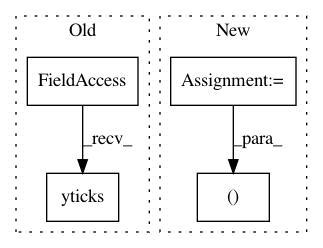

a37910cf0c8fbd1f863c058912571902198cad44,qanta/reporting/plotting.py,,plot_confusion,#Any#Any#Any#Any#,7
Before Change
plt.colorbar()
tick_marks = np.arange(len(labels))
plt.xticks(tick_marks, labels, rotation=45)
plt.yticks(tick_marks, labels)
plt.ylabel("True Label")
plt.xlabel("Predicted Label")
ax = plt.gca()
ax.grid(False)
After Change
else:
cm = confusion_matrix(true_labels, predicted_labels, labels=labels)
fig, ax = plt.subplots(figsize=(10, 10))
ax.imshow(cm, interpolation="nearest", cmap=plt.cm.Blues)
ax.set_title(title)
// plt.colorbar()
In pattern: SUPERPATTERN
Frequency: 3
Non-data size: 4
Instances
Project Name: Pinafore/qb
Commit Name: a37910cf0c8fbd1f863c058912571902198cad44
Time: 2017-05-23
Author: ski.rodriguez@gmail.com
File Name: qanta/reporting/plotting.py
Class Name:
Method Name: plot_confusion
Project Name: matplotlib/matplotlib
Commit Name: 23dad88287331e254e119634bc991d1e8bbb8668
Time: 2019-03-25
Author: anntzer.lee@gmail.com
File Name: examples/text_labels_and_annotations/stix_fonts_demo.py
Class Name:
Method Name:
Project Name: matplotlib/matplotlib
Commit Name: 21e7d2ca9cfa51ceaf46d65a5ec30abfcdc5bffe
Time: 2019-03-30
Author: tcaswell@gmail.com
File Name: examples/text_labels_and_annotations/stix_fonts_demo.py
Class Name:
Method Name: